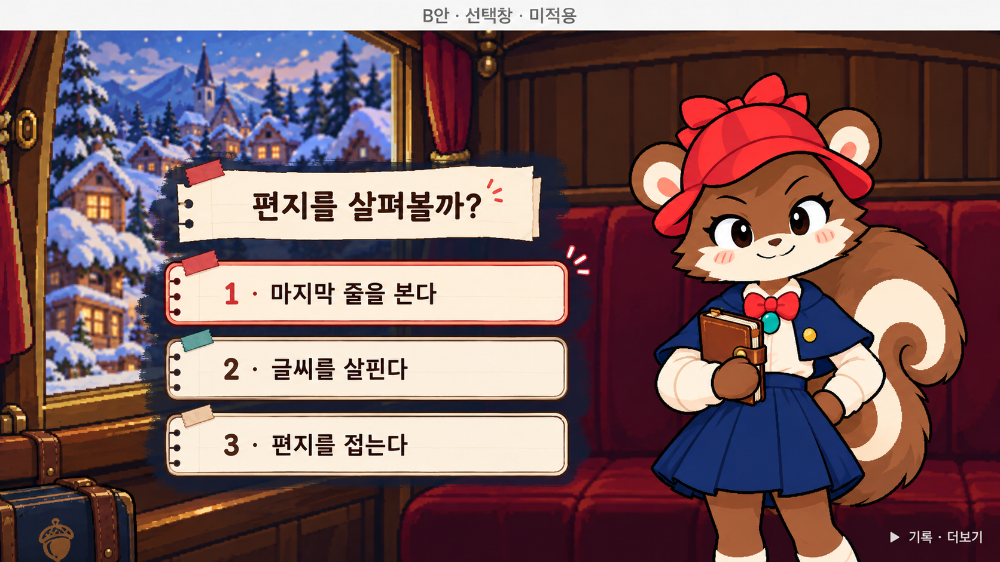

<!doctype html><meta charset="utf-8"><title>선택창 같은 장면 비교</title><style>@font-face{font-family:p;src:url(../../../game/assets/Pretendard-Bold.otf)}*{box-sizing:border-box}body{margin:0;background:#f5ecd9;color:#42271b;font-family:p,sans-serif;width:2560px}header{height:100px;padding:20px 30px;font-size:28px}small{display:block;font-size:19px;margin-top:8px;color:#765f48}main{display:flex;gap:0}figure{margin:0;width:1280px}figcaption{height:54px;padding:12px 26px;background:#26394b;color:#fff1d7;font-size:24px}img{display:block;width:1280px;height:720px;object-fit:contain;background:#1a1715}footer{padding:22px 30px;font-size:23px;height:96px}</style><header>선택창 · 같은 마차/편지 장면 대조<small>각 화면 1280×720 · 왼쪽은 저장소에 있는 최초 B안 원본 · 최신 수정 시안의 분리 원본은 확인 대기</small></header><main><figure><figcaption>제공된 B안 원본</figcaption></figure><figure><figcaption>실제 게임 작업본 — 원본 부품 확인 전, 공개 미반영</figcaption></figure></main><footer>확인된 차이: 다람이 원화·흰 테두리, 제목 종이, 카드 외곽, 무늬 테이프, 도토리 스티커. 위치·간격·굵은 글씨는 수치로 조정 중.</footer>